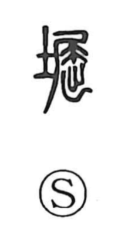

堀

Kun: hori | On: kutsu
moat ・ ditch ・ canal ・ hole ・ burrow
Explanation
堀 is a phono-semantic character with 屈 serving as the sound element. 屈 originally depicts an animal crouched with its tail bent, and in forms like 窟 (“cave”) points to the creature’s dwelling. Building on that, 堀 names the earthen hollow made by digging and breaking the soil—the animal’s living hole—hence the sense “hole,” seen in compounds such as 堀穴 and 堀室. In Japanese usage the word broadened to an excavated trench filled with water, a moat or canal, as in 外堀 and 釣堀. For the specific sense “moat,” Chinese commonly uses 濠.